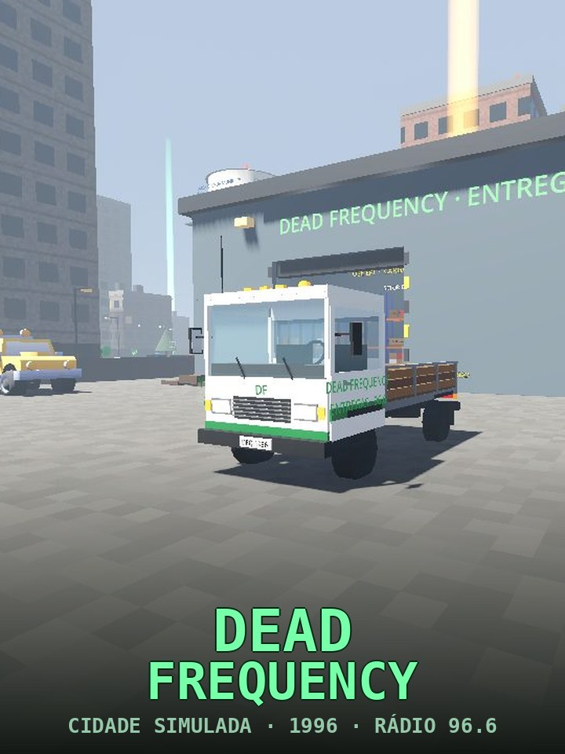

AlphaDead Frequency
Uma cidade simulada na zona morta, em primeira pessoa e com cara de PlayStation 1. Escolha uma profissão, ouça a Rádio 96.6 e ajude a cidade a funcionar, sozinho ou com até 8 amigos.
Conhecer o jogo
Pixel art, cidades low-poly e muita bagunça controlada. Sempre quase prontos, sempre melhorando.
Ver os jogosProjetos abertos, com código no GitHub e launcher que atualiza sozinho.

AlphaUma cidade simulada na zona morta, em primeira pessoa e com cara de PlayStation 1. Escolha uma profissão, ouça a Rádio 96.6 e ajude a cidade a funcionar, sozinho ou com até 8 amigos.
Conhecer o jogo Em desenvolvimento
Em desenvolvimentoSpin-off 2D: dirija a van por estradas que mudam a cada partida, enfrente ondas de zumbis e compre upgrades permanentes na oficina.
Conhecer o jogoO Quase Pronto Studios nasceu das lives e da vontade de transformar ideias do chat em jogos de verdade. Tudo é feito em público, com código aberto, versões beta para testar e launcher próprio.
Acompanhar na Twitch